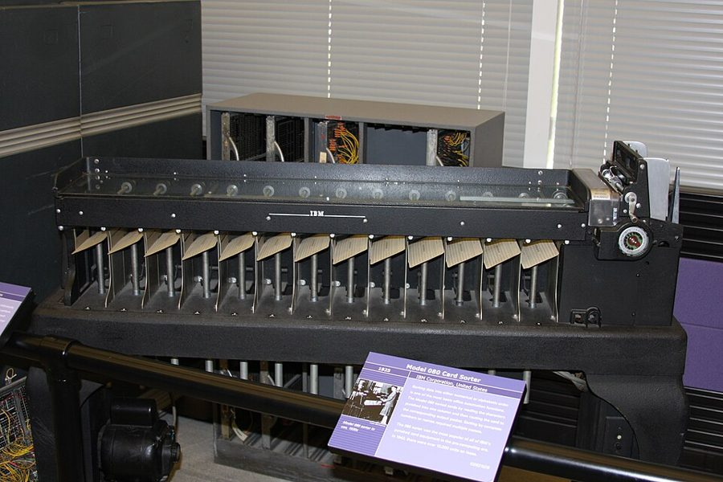
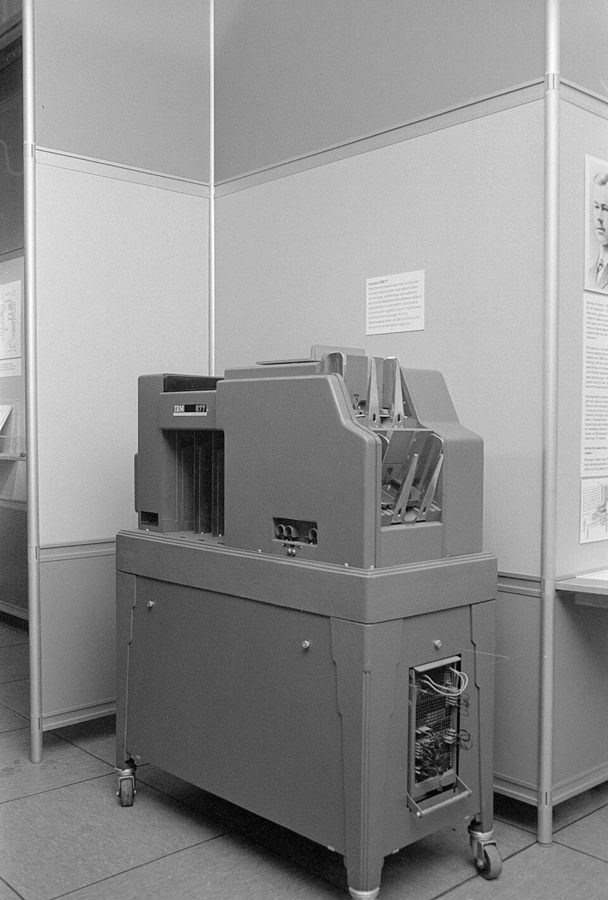

这一章在做什么
数据大到一台机器装不下、一次请求里算不完时，就交给批处理：读一批只读的输入，从头算出一份新的输出。输入不改，算错了删掉输出重跑就行。这一章先在一台机器上看排序和计数，再把同样的事搬到集群：数据放在分布式文件系统或对象存储里，编排器决定任务在哪跑、失败了怎么补，MapReduce 和数据流引擎靠「洗牌」把同一个键的数据送到一起。最后看批处理拿来做什么，结果怎么交给线上系统。

IBM 080 打孔卡片排序机，计算机出现之前的批处理。每过一遍机器只看卡片上的一列，按这一列的打孔把卡片落进下面不同的格子；按好几位数排序，就一列一列地过好几遍。这一章的分布式批处理，底下也是一个排序算法（§3.3）。Pargon，CC BY 2.0，维基共享资源 读之前：先预测
前面十章大多在讲请求和响应：在线系统收到请求，尽快给出结果。这一章换一种做法，也是全书「派生数据」这一块的开头。第 1 章分过「记录系统」和「派生数据」，批处理的输出就是派生数据；第 4 章的 LSM 树、有序段的合并、云数仓，在这里会以集群的规模再出现一次；第 7 章的按键哈希分片，就是洗牌把数据分给各个任务的办法。下一章把输入从有限的一批换成永不结束的流，第 13 章再把批处理和流处理放进同一套数据集成的思路里。
一份 50 GB 的订单明细，每行一单，记着买的是哪个商品。要统计每个商品卖出了多少单。机器内存 8 GB，全站一共 20 万个商品。用一个内存哈希表（商品 ID → 计数）一行行读、一行行累加，会怎样？
跑不动：明细比内存大得多，必须先在磁盘上排序
跑得动：哈希表里只有 20 万个商品各一个计数器，和明细有多大无关
跑得动，但会比排序慢很多倍，因为哈希表是随机访问
跑不动：哈希表要把每一行明细都存下来，最后才能计数
一个批处理作业把结果写在对象存储的 out_tmp/ 前缀下，共 2 万个对象。跑完后，想把它「改名」成 out/，好让下游一次看到全部结果。会发生什么？
和本地文件系统的 mv 一样，一次原子操作，瞬间完成
对象存储不支持改名，调用直接报错
只改一条目录元数据，很快，但要等缓存过期别人才看得到
要把 2 万个对象逐个复制到新的键、再删掉旧的；很慢，而且不是原子的
数据大到一台机器放不下时，怎么把「读进来、算一遍、写出去」这件事拆给成百上千台机器，让每台只管自己那一份，最后又能把同一个键的数据凑到一起？出了错，怎么只补出错的那一小块？
内存哈希表和排序都能做计数。各在什么条件下更合适？§1.3
对象存储和分布式文件系统，哪些操作看起来一样、其实不一样？§2.2
两个 mapper 吐出同一个键，框架怎么保证它们落到同一个 reducer？排序在这里起什么作用？§3.3 §3.4
批处理的结果为什么不该在任务里一条条写进线上数据库？§4.4
这一章的骨架
这一章先在一台机器上把问题讲清（§1），再借「分布式操作系统」的类比，依次讲集群上的存储、编排、计算三层（§2–§3），最后是用途（§4）。容易乱的是 §2.3 和 §3：前者很长，调度、工作流、容错三件事混在一节里；后者从 MapReduce 讲到 SQL，中间的 §3.3 洗牌才是机制的核心，读到那里要回头和 §1.3 的排序对上。
问题：数据一台机器装不下，算错了要能重跑 §0
一台机器：命令行管道或一段脚本 §1–§1.3
代价：内存和磁盘
都只有一台的量
搬到集群：像一个分布式的操作系统 §2
存储
编排
计算
分布式文件系统 §2.1
对象存储 §2.2
资源怎么分 §2.3
作业连成工作流 §2.3
失败了只重跑一个任务 §2.3
MapReduce §3.1
数据流引擎 §3.2
洗牌、连接、分组 §3.3–3.4
SQL 和 DataFrame §3.5–3.6
改名不原子，计算离数据远
公平和利用率难两全
每一步都写盘，还是丢了重算
拿来做什么 §4.1–4.3：ETL、分析、机器学习 ｜ 结果怎么交出去 §4.4
黄色格子是每一层要付的代价；绿色的洗牌是 §1.3 的排序在集群上的版本
本站画的全章结构。三列对应书里「分布式操作系统」的类比：文件系统、调度器、互相传数据的程序。
边读边填：每行一个问题，读到答案就写一两句。只存在你这台设备的浏览器里，别人看不到。
读完了？对照我找到的
排序的用处：在内存里排好一块就写成有序段，再把段归并，读写盘都是顺序的；就是 LSM 树的做法。
对象存储少了什么：没有追加（多数）、硬链接、文件锁和原子改名；改名是复制再删除，改一个「目录」要逐个对象改。
调度的两难：成组调度让节点空等甚至死锁；干等会饿死；抢占浪费已做的工作。实际用 FIFO、DRF、配额等启发式。
中间结果放哪：MapReduce 写回分布式文件系统；Spark 放内存、记住怎么算出来的，丢了重算；Flink 定期做检查点。
数据流引擎省了什么：只在需要时排序，相邻算子合并成一个任务，中间状态不写 DFS，不用等上一阶段全部结束，进程复用。
两张大表怎么连：两边都按连接键洗牌，二次排序让维度那条先到；reducer 一次只记住一条维度记录。
结果交给线上：写进 Kafka 一类的流，或在作业里建好整份数据库文件再批量导入；前者要另外补「全有或全无」，后者难做增量。
分节地图
全章约 1.2 万词，建议分四次读。第一次是热身，命令行和存储都不难；第二次的 §2.3 最长，可以在小标题处喘口气；第三次是机制的核心，慢一点读；第四次几个用途彼此独立，§4.4 最值得细读。
第一次坐下§0–§2.2 · 约 3900 词 · 从一台机器的命令行到集群上的存储
Much of this book so far…约 1100 词 开篇 在线系统和批处理的分别，输入只读带来的好处，MapReduce 之后的变化和全章路线。 Batch Processing with Unix Tools约 200 词 用 Unix 工具做批处理 一行网页服务器日志里有什么，为什么日志分析是批处理的老本行。 Simple Log Analysis约 400 词 简单的日志分析 一串命令找出最热门的页面。只看每一步做了什么，不用记命令。 Chain of Commands Versus Custom Program约 200 词 命令链和自己写程序 同一件事写成一段脚本。语法的差别是表面的，执行方式的差别在下一节。 Sorting Versus In-Memory Aggregation约 400 词 排序和内存里聚合 哈希表和排序各在什么时候合适，工作集是什么。全章排序这条线的起点。 Batch Processing in Distributed Systems约 100 词 分布式系统里的批处理 一台机器上的文件系统、调度器、管道，到集群上各对应什么。 Distributed Filesystems约 900 词 分布式文件系统 和本地文件系统一层层对照：块、缓存、元数据、协议；方框讲共享磁盘和无共享。 Object Stores约 700 词 对象存储 对象存储和文件系统哪里不同：对象不可变、没有真目录、改名、计算和存储分开。 第二次坐下§2.3–§3.2 · 约 3400 词 · 调度和容错，MapReduce 和数据流引擎
Distributed Job Orchestration约 2000 词 分布式作业编排 编排器的三个部件，资源怎么分配，工作流的调度，任务失败了怎么办。全章最长的一节。 Batch Processing Models约 100 词 批处理的模型 两种最常见的处理模型，以及为什么还要先懂 MapReduce。 MapReduce约 700 词 MapReduce 模型 mapper 和 reducer 各做什么，怎样和前面命令行的例子一一对上。 Dataflow Engines约 500 词 数据流引擎 Spark、Flink 这类引擎把整个工作流当一个作业，比 MapReduce 省在哪。 第三次坐下§3.3–§3.6 · 约 2300 词 · 洗牌和连接，再到 SQL 和 DataFrame
Shuffling Data约 700 词 洗牌 分布式排序：map 的输出怎么按键分给各个 reduce。全章机制的核心，配合下面的模拟器读。 Joins and Grouping约 600 词 连接和分组 排好序之后，reducer 怎么一次拿到一个键的全部数据，做连接和聚合。 Query Languages约 800 词 查询语言 SQL 怎样成了批处理的共同语言；方框讲批处理和云数仓怎么越走越近。 DataFrames约 300 词 DataFrame 数据框 DataFrame 从单机搬到分布式之后，哪些地方和原来不一样。 第四次坐下§4–§5 · 约 2500 词 · 批处理拿来做什么，结果怎么交出去
Batch Use Cases约 200 词 批处理的用途 什么样的活适合批处理，几个行业里的例子。 Extract–Transform–Load约 400 词 抽取、转换、加载 批处理做 ETL 的几个长处；数据流水线不再只归一个团队管。 Analytics约 300 词 分析 在批处理系统上跑分析查询：预先聚合和临时查询两种用法。 Machine Learning约 500 词 机器学习 特征、训练、批量推理、图计算，以及大模型训练前的数据处理。 Serving Derived Data约 700 词 把派生数据交给线上 算好的结果怎么送回线上：为什么不逐条写库，流和批量导入各管什么。 Summary约 400 词 小结 全章回顾。先自己回忆一遍再读它。
先用中文过一遍
输入只读、输出重算：批处理敢重跑的前提
在线数据库里，一个写错数据的 bug 上线了，把代码回滚也收不回那些错数据。批处理作业把输入当成只读的，每次运行都从头生成输出，也不去改外部系统，于是出了错的补救很简单：修好代码，删掉坏的输出，再跑一遍。旧的输出还留着的话，直接切回去也行。这一条贯穿全章：任务失败时只要把它的半截输出删掉、换台机器重跑；工作流里上下游之间靠文件交接；结果要交给线上系统时，麻烦也恰好出在「往外写」这一步（§4.4）。代价是哪怕输入只改了一个字节，也得把整份输入重新处理一遍。
计数的两种做法：哈希表，还是先排序
统计「每个商品卖出了几单」，最直接的办法是一个内存哈希表，读一行加一次。它要的内存只取决于有多少个不同的 商品，和明细有多长无关；书里把一个作业需要随机访问的那部分内存叫工作集（working set）。另一种办法是先按商品排序，相同的商品就挨在一起了，从头扫一遍、数相邻的就行。排序的好处在内存不够时显出来：在内存里排好一块，写成一个有序段，最后把几个段归并，读写盘全是顺序的。这正是第 4 章 LSM 树刷盘、合并的那一套。分布式批处理选了排序这条路，原因也在这里。
做法一：内存哈希表
做法二：先排序（内存不够就写盘）
输入：九条订单（只看商品 ID）
p07 p02 p07 p31 p02 p44 p09 p31 p07
内存里的表
p07 → 3
p02 → 2
p31 → 2
p44 → 1
p09 → 1
表有几行，只看有几个不同的商品
同一个商品卖出一百万单，也只占一行
每三条在内存里排好，写成一个有序段
p02 p07 p07
p02 p31 p44
p07 p09 p31
归并：三个段顺序读
p02 p02 p07 p07 p07 p09 p31 p31 p44
数相邻的：p02 2 p07 3 p09 1 p31 2 p44 1
内存只要装得下一块
块再多，也只是多几个段、多归并几轮
本站画的示意图，商品 ID 和记录是编的。两种做法结果一样；区别在内存不够时谁还撑得住。
map、洗牌、reduce：同一个键怎么凑到一起
把计数搬到集群上，输入已经切成很多分片，每个分片交给一个 map 任务。map 任务对每条记录调用一次你写的 mapper，吐出若干个「键，值」对，记录之间不留任何状态。难点在下一步：两个 map 任务都吐出了「杭州」，怎么让它们最后由同一个 reduce 任务处理？办法是每个 map 任务给每个 reduce 任务在本地盘上单独写一个文件，用键的哈希值决定一条记录进哪个文件，文件里的记录边写边排好序。map 跑完后，每个 reduce 任务去各个 map 那里把属于自己的文件拉过来，归并成一个有序序列，同一个键就挨在一起了，然后对每个键调用一次 reducer。这个「分桶、排序、拉取、归并」的过程就叫洗牌（shuffle），它其实是一个分布式排序，和洗扑克牌的「打乱」正好相反。
map 任务读一个分片
本地盘：给每个 reduce 一个文件
reduce 任务：拉取、归并、逐键调用
map 1
杭州 苏州
杭州 南京
map 2
苏州 宁波
杭州 宁波
给 r1：杭州 杭州
给 r2：南京 苏州
给 r3：（空）
给 r1：杭州
给 r2：苏州
给 r3：宁波 宁波
reduce 1
归并：杭州 杭州 杭州
调用 1 次 → 杭州 3
reduce 2
归并：南京 苏州 苏州
调用 2 次 → 南京 1，苏州 2
reduce 3
归并：宁波 宁波
调用 1 次 → 宁波 2
假设键的哈希把杭州分给 r1，南京、苏州分给 r2，宁波分给 r3。
不管「杭州」出现在哪个分片里，它都只会进 r1。每个 reduce 写一个输出文件。
本站画的示意图，城市和订单是编的。蓝色粗线是「杭州」走的路。reduce 任务的个数由写作业的人定，和 map 任务数无关。
MapReduce 把这套 map、洗牌、reduce 做成固定的一步，复杂的计算就串成好几个作业，每个作业的输出写回分布式文件系统，下一个作业再读。数据流引擎（Spark、Flink）把整条工作流当成一个作业：只在真需要的地方排序，中间结果尽量放在内存或本地盘，下游不用等上游整个跑完。读 §3.2 时，留意它为此在容错上换了什么办法（§2.3 的末尾已经提了一句）。
用排序做连接：reducer 一次只看一个键
两张大表连接，比如几十亿条订单要按商家 ID 连上商家资料，拿到商家所在的城市。逐条订单去查商家表，就是几十亿次网络请求。洗牌给了另一条路：两张表各用一个 mapper，都把商家 ID 当键吐出来，订单那边的值是金额，商家那边的值是城市。洗牌之后，同一个商家的资料和它的全部订单到了同一个 reducer，还可以让框架把商家那条排在最前面（二次排序）。reducer 先记下城市，再把后面每条订单配上城市写出去，内存里任何时候只有一个商家的资料。下一个作业再按城市洗牌，就能算每个城市的订单额。
订单（很大）
o1 s07 金额 18
o2 s03 金额 40
o3 s07 金额 25
o4 s03 金额 12
o5 s07 金额 32
商家资料（也很大）
s03 城市 杭州
s07 城市 苏州
按商家 ID
洗牌 + 二次排序
负责 s07 的 reducer 依次收到
① s07 的商家资料：苏州
② o1 金额 18 → 输出 苏州 18
③ o3 金额 25 → 输出 苏州 25
④ o5 金额 32 → 输出 苏州 32
s03 由另一个 reducer 照样处理
内存里只记着「s07 在苏州」这一条
不用发一次网络请求去查商家表
本站画的示意图，表和数据是编的。资料那条先到，靠的是二次排序；没有它，reducer 就得先把订单攒在内存里等资料。

IBM 077 卡片校对机（collator）。它有两个进卡口，能把两叠都已排好序的卡片一趟合成一叠有序的，这就是归并。§1.3 的段归并、§3.3 的 reduce 拉取后的归并、§3.4 的排序归并连接，做的都是这一步。Tekniska museet，CC BY 3.0，维基共享资源 这一章点名的系统
HDFS 分布式文件系统 Hadoop 的文件系统，默认块大小 128 MB；元数据由 NameNode 管，块存在各台机器的 DataNode 上。
Amazon S3 对象存储 它的 API 被 MinIO、Cloudflare R2 等许多存储系统采用，支持 S3 的批处理系统都能用它们。
YARN 作业编排 Hadoop 的资源管理和调度；每个节点上跑 NodeManager，集群状态存在 ZooKeeper 里。
Kubernetes 作业编排 每个节点上跑 kubelet，集群状态存在 etcd 里；应用自己的调度逻辑叫 operator。
Spark 数据流引擎 中间数据放在内存里（放不下就溢写到本地盘），记住它是怎么算出来的，丢了就重算。
Flink 数据流引擎 和 Spark 同类，容错靠定期给各个任务做检查点（快照）。
Airflow、Dagster、Prefect 工作流调度器 管理作业之间的依赖：上游都成功了，才启动下游。
Ray 批处理框架 书里说它为机器学习和大模型的数据处理而建，OpenAI 在 ChatGPT 的训练过程中用到它。
Venice 派生数据存储 书里的例子：既能整份替换批处理算出的数据集，也能按行增量更新。
英文 中文 一句话 batch processing 批处理 读一批只读的输入，从头生成输出，按吞吐量衡量（§0）。 online system 在线系统 收到请求尽快给出响应的系统，按响应时间衡量（§0）。 human fault tolerance 对人为错误的容错 代码写错了也能恢复：修好代码重跑，或切回旧输出（§0）。 working set 工作集 一个作业需要随机访问的那部分内存（§1.3）。 distributed filesystem (DFS) 分布式文件系统 文件切成大块，分散复制到多台机器上（§2.1）。 object store 对象存储 按键整个读写不可变的对象，没有真正的目录（§2.2）。 job orchestrator 作业编排器 集群上的「内核」：决定任务在哪台机器上跑、分多少资源（§2.3）。 gang scheduling 成组调度 一个作业要的资源凑齐了，才让它的任务一起开跑（§2.3）。 preemption 抢占 调度器杀掉正在跑的任务，把资源让给更要紧的（§2.3）。 workflow 工作流 批处理里指作业组成的有向无环图（DAG），上游的输出是下游的输入（§2.3）。 MapReduce MapReduce 只写 mapper 和 reducer 两个函数，中间的排序由框架做（§3.1）。 dataflow engine 数据流引擎 把整条工作流当一个作业来执行的引擎，如 Spark、Flink（§3.2）。 shuffle 洗牌 分布式排序：按键把数据分给下游任务，并排好序（§3.3）。 sort-merge join 排序归并连接 两边按连接键排序后归并，在 reducer 里完成连接（§3.4）。 secondary sort 二次排序 同一个键之下，再规定值的先后，比如资料在前、事件按时间（§3.4）。
动手：模拟器
先猜：48 条订单里将近一半属于同一个商家（分布选「一个热键」）。reduce 任务从 2 个加到 6 个，reduce 阶段的用时能缩短到原来的几分之一？换成「均匀」分布再猜一次。猜好了，点「跑完」，再拖滑杆验证。书里这一章没有专门讲倾斜，它的道理在第 7 章 §3.3；这里看的是它在洗牌里的样子。
模拟器 洗牌：按键分组与数据倾斜 三个 map 任务各读 16 条订单，键是商家 ID（s01–s12）。单步看订单怎么按键的哈希分桶、排序、被各个 reduce 拉走归并；再看哪个 reduce 拖慢了整个作业。
选「一个热键」，点「跑完」，把 reduce 任务数从 2 拖到 6，记下「最忙的 reduce」每次是多少。它最低能降到多少？为什么降不到平均值？
换成「均匀」，把 reduce 任务数拖到 5，再点「换一批数据」几次。没有热键时，各个 reduce 的条数也不一样多，甚至有一个一条都没分到，原因在哪？
回到「一个热键」，勾上「拆开最热的键」（第 7 章 §3.3 讲的加随机后缀）。最忙的 reduce 降了多少？多出来的第二轮在做什么？如果两个子键碰巧落到同一个 reduce 上，又会怎样？
词与短语
词条按在书里出现的顺序排，按节分组；读一节之前先把这一节的过一遍，读的时候就不用停。斜体小字是原句里连续的几个词，在电子书里搜它就能找到那一句。标着「每个字都认识」的，是字面意思会把你带偏的。行话（compaction、quorum 这类）不在这里，在上面的术语表里。
§0 Much of this book so far…
from scratch
… generated from scratch every time the job …
从零开始、整个重新
每次运行都整份重算，不在上一次的输出上改。
minimizing irreversibility
… This principle of minimizing irreversibility is …
尽量少做无法挽回的事
present challenges
… it also presents challenges.
带来难题
present 当动词是「造成、带来」，不是「展示」。
quite a bit like
… looks quite a bit like a batch …
很像
quite a bit 是「相当多」，不是「有一点」。
building block
… a useful building block for building …
基本构件
commodity hardware
… achieved on commodity hardware, but now …
普通的通用硬件
commodity 在这里是「大路货」：随处买得到、不是专门定制的机器，便宜但更容易坏。
largely obsolete
… now it is largely obsolete and …
基本过时了
ubiquitous
… Cloud computing has grown ubiquitous.
无处不在
blur the line between
… are blurring the line between data warehouses …
让两者的界线变得模糊
这一章反复出现：批处理和数仓、在线和离线，界线都不那么清楚了。
build an intuition
… To build an intuition of what …
建立直观的感觉
§1 Batch Processing with Unix Tools
contrived
… log parsing might seem contrived, it’s …
（例子）刻意编出来的、不自然的
作者先替你说出怀疑：分析日志像是教科书里硬凑的例子，其实不然。
a driving force behind
… it was a driving force behind …
背后的推动力
§1.1 Simple Log Analysis
pretty reports
… produce pretty reports about your website …
好看的报表
pretty 在这里是形容词「漂亮的」，不是副词「相当」。
for the sake of exercise
… for the sake of exercise, let’s …
权当练习
obscure
… looks a bit obscure if you’re …
晦涩、难懂
in a matter of seconds
… in a matter of seconds, and …
几秒之内
a matter of 加时间，强调「只需要这么点」，和「问题、事情」无关。
perform surprisingly well
… and they perform surprisingly well.
性能好得出人意料
perform 说的是跑得快不快，不是「表演」。
§1.2 Chain of Commands Versus Custom Program
a matter of taste
… is in part a matter of taste.
看个人口味
意思是没有对错。紧接着的 however 才是重点：执行方式差别很大。
superficial
… the superficial syntactic differences between the …
表面的
§1.3 Sorting Versus In-Memory Aggregation
spill to disk
… by spilling to disk and automatically …
（内存放不下时）溢写到磁盘
spill 本义是液体洒出来；数据处理里指内存装满后把一部分写到盘上，后面 Spark 那段还会出现。
that’s where … come in
… that’s where distributed batch processing frameworks …
这正是……派上用场的地方
come in 是「登场、起作用」，用来引出下一节的主角。
§2.1 Distributed Filesystems
speak directly to
… block device drivers speak directly to the disk …
直接和……打交道
speak to 在技术英文里常指「通过某种协议和它通信」。
appliance
… a centralized storage appliance, often using …
（软硬件一体的）专用设备
不是「家电」：指厂商整机卖给你的存储设备，和用普通机器拼出来的相对。
§2.2 Object Stores
care must be taken
… Care must be taken when adopting …
要当心
requisite
… to implement the requisite APIs.
必需的
整句的意思：看起来实现了该有的接口，行为也可能不一样。
§2.3 Distributed Job Orchestration
competing needs
… among jobs with competing needs.
互相争抢的需求
hold back
… or hold some back in anticipation …
留着先不给
in anticipation of 是「预备着……」：为一个可能来、也可能不来的作业预留资源。
sit idle
… nodes will sit idle.
闲着没事干
sit 在这里不是「坐」，是「处于某种状态」。
intractable
… optimal solution seems intractable.
（计算上）难以解决的
prohibitively
… it is prohibitively slow to calculate …
（慢、贵）到没法用的程度
prohibit 是「禁止」；prohibitively expensive / slow 是贵到、慢到实际上做不了。
all but
… for all but the smallest examples.
除了……之外的全部
只有最小的例子能算出最优解。all but 也常表示「几乎」，要看后面接什么。
run the risk of
… they run the risk of being preempted …
冒着……的风险
at the granularity of
… at the granularity of an individual task.
以……为单位
§3 Batch Processing Models
turn our attention to
… Let’s now turn our attention to …
把注意力转到
§3.1 MapReduce
make their way into
… they have made their way into mainstream …
（慢慢）进入了、传到了
make one’s way 是「一路走到」，强调经过了一段时间。
laborious
… APIs is actually quite laborious
费力、繁重
§3.2 Dataflow Engines
need not
… operators need not take the strict roles …
不必
in a row
… several operators in a row that …
接连的、一个挨一个的
不是「在一行里」：几个算子前后相接。
§3.3 Shuffling Data
shuffle a deck of cards
… When you shuffle a deck of cards …
洗一副扑克牌
作者特意提醒：批处理的 shuffle 结果是排好序的，一点也不随机，和洗牌的本义相反。
§3.4 Joins and Grouping
in one go
… particular user ID in one go, …
一口气、一次处理完
at any one time
… in memory at any one time, …
在任何一个时刻
§3.5 Query Languages
more or less
… considered more or less solved, …
差不多、基本上
lingua franca
… SQL as the lingua franca for batch …
通用语言
原指母语不同的人之间用来交流的共同语言。
a natural fit
… It’s a natural fit, because legacy …
天然合适
the task at hand
… suitable for the task at hand.
手头这件事
at hand 是「眼前的、手边的」。
struggle with
… Cloud data warehouses struggle with certain workloads …
应付不好
不是「和……搏斗」：做得吃力、效果不好。
come down to
… often comes down to factors such as …
归根到底取决于
get by with
… often get by with just one.
（只用……）也能凑合过去
§3.6 DataFrames
performance surprises
… lead to performance surprises when migrating …
性能上的意外（通常是变慢）
往轻里说：surprise 在这里几乎都不是好事。
§4 Batch Use Cases
data freshness
… and data freshness isn’t important.
数据的新鲜程度（离产生有多久）
§4.1 Extract–Transform–Load
embarrassingly parallel
… involves “embarrassingly parallel” workloads.
（容易到）不用费心就能并行的
行话，不是「尴尬」：任务之间完全不用互相通信，拆开各算各的就行。
go awry
… fix when things go awry.
出岔子
invaluable
… This feature is invaluable when debugging …
极其宝贵
in- 在这里不是否定：贵重到没法估价。
§4.2 Analytics
roll up into
… Data is rolled up into OLAP cubes …
汇总成
roll up 在分析里是「往上汇总」，和 drill down（往下钻到明细）相对。
§4.3 Machine Learning
make heavy use of
… also make heavy use of graph processing …
大量使用
purpose-built
… are purpose-built for such workloads.
专门为此而建的
§4.4 Serving Derived Data
be tempted to
… You might be tempted to use …
很想（这么做）
作者先说出那个顺手的做法，紧接着说它是个坏主意。
throttle
… Downstream systems can throttle their read rate …
（主动）限速
本义是节流阀、掐住喉咙；这里是下游自己控制读得多快。
demilitarized zone
… in a so-called demilitarized zone (DMZ) …
隔离区（网络里的 DMZ）
本义是对峙各方约定不得驻军的非军事区；网络里指夹在两个网络中间、两边都只能有限访问的一段。
bootstrap
… more common when bootstrapping databases is …
（从零）建起、初始化
bootstrap 本义是靴子后面的提带；技术里指从无到有把一个东西建起来，开机的 boot 就是 bootstrap 的缩写。
到这里先停下，去读原书 下面是读完再看的：你的预测对不对、几道换成你来选的判断题、值得细读的句子和理解检查。先看了，读书时就只是在找答案。
读完：回到你的预测
答案是第二项（§1.3）。哈希表里每个商品只占一行：商品 ID 加一个计数器。工作集只取决于不同的商品有多少个，同一个商品卖出一百万单也还是一行。20 万行远远放得进 8 GB，明细是 50 GB 还是 500 GB 都无所谓，读明细本身是顺序的。书里也是这么说的：工作集够小，哈希表在笔记本上就能跑。排序的优势要等工作集比内存还大时才出现，那时它可以在内存里排好一块、写盘、再归并。想一想：如果统计的是「每个用户 × 每个商品」各买了几单，不同的组合有几十亿个，答案会变吗？
答案是第四项（§2.2）。对象存储没有真正的目录，斜杠只是键的一部分；改名靠把对象复制到新键再删掉旧的，不是原子的，「改一个目录名」就得逐个改里面的每个对象。所以 2 万个对象要做 2 万次复制和删除，中途来读 out/ 的人可能只看到一部分（这一句是本站从「非原子」推出来的，书里没有展开）。本地文件系统的 rename 才是原子的。这也是 §4.4 要专门讲「全有或全无」的原因之一。想一想：如果改成让下游去读一个「清单」对象，里面列着这次输出的全部文件，作业最后才写这个清单，问题解决了吗？
判断题：换成你来选
场景都是本站编的。先选，再看解释；解释里写了对应的节号，拿不准就回原书看那一节。
最后那个任务为什么这么慢？§3.3
场景：一个每晚跑的作业，按广告主 ID 汇总当天的点击。reduce 阶段有 200 个任务，199 个三分钟内结束，最后一个跑了两个多小时。换了机器重跑，还是它最慢。
那台机器的磁盘有问题，换个节点就好 有一个广告主的点击特别多，同一个键全落在这一个 reduce 任务上 reduce 任务太少，再加到 400 个就能均匀 map 的输出没有排序，这个 reduce 要自己排
洗牌保证同一个键进同一个 reduce 任务（§3.3），所以一个超大的键只能由一个任务处理。换了机器还慢，说明不是机器的问题；加 reduce 任务数只能把别的键分得更散，分不开这一个键。map 输出总是排好序再交给 reduce 的。办法在第 7 章 §3.3：给热键加随机后缀拆成几份，再加一轮把部分结果合起来。
推荐结果怎么送到线上？§4.4
场景：一个批处理作业每晚给 5000 万用户算推荐列表，有 300 个 reduce 任务。线上 App 从一个键值存储里读推荐。要求：任何时刻用户看到的都是同一晚算出来的完整结果。
每个 reduce 任务用数据库客户端，把自己那部分逐条写进线上的键值存储 每个 reduce 任务跑完就把它那部分批量写进线上存储，让新结果尽早可见 在作业里把整份数据建成键值存储能直接导入的文件，跑完后批量导入，一次切换到新版本 把结果写进 Kafka，线上存储收到一条就立即让它可查
在作业里建好整份数据库文件再批量导入，切换版本是一次完成的，正合「同一晚的完整结果」的要求（书里提到 RocksDB 可以导入批处理生成的 SST 文件）。逐条写既慢又可能压垮线上库，任务重试还会写重复。按任务分批写、收到一条就可查，都会让用户看到一半新一半旧。走 Kafka 本身可以，但要等作业发出「完成」通知后再让数据可见。
用便宜的可抢占实例跑，框架最好怎么处理失败？§2.3
场景：公司把不赶时间的报表作业放到云上的低价可抢占实例上跑。每个作业几百个任务，一晚上总有十几个任务被回收机器杀掉。
任务之间互不依赖，被杀的任务删掉半截输出，换台机器单独重跑 只要有任务失败，就把整个作业从头再跑一遍 任务把输出直接写进最终目录，重跑时从断点接着写 关掉重试，失败的任务留空，第二天手工补
批处理每次从头生成输出，所以任务失败可以只重跑这一个任务，前提是任务彼此独立、输出先写在别处，成功后才算数（§2.3）。整个作业重跑在抢占频繁时可能永远跑不完；直接写最终目录会让下游读到半截或重复的数据；留空就失去了「全有或全无」。
从 MapReduce 迁到 Spark，主要省在哪？§3.2
场景：一条流水线由 6 个 MapReduce 作业串成，每个作业的结果写回 HDFS（三副本），下一个再读出来。每天要跑四个小时。团队打算用 Spark 重写同样的逻辑。
Spark 不用排序，所以洗牌的开销没了 主要是 SQL 比 Java 好写，机器上的开销差不多 Spark 把数据放在对象存储上，比 HDFS 快 中间结果不再写成 DFS 上的多副本文件，相邻算子能合成一个任务，下游不必等上游全部结束
数据流引擎把整条工作流当一个作业，中间状态放内存或本地盘，不用每步复制三份写 DFS；不改分片的算子合并成一个任务；算子的输入一准备好就能开始（§3.2）。排序没有消失，只是只在需要的地方做（连接、分组仍要洗牌）。代价是中间数据丢了要重算，Spark 为此记住每份中间数据是怎么算出来的。
和本站其他书对照
rename 的原子性 OSTEP 第 39 章 本地文件系统的 rename 在崩溃时也是原子的，「写临时文件、刷盘、再改名」是原子更新文件的标准做法。§2.2 说对象存储恰恰没有这个保证，读那一节前先看看本地的这套做法依赖的是什么。
去那一页 → 公平和效率 OSTEP 第 9 章 一台机器上的比例份额调度，讲的是让每个作业按份额分到 CPU。§2.3 的集群调度器也在公平和利用率之间权衡，只是它分的是整个集群的核、内存和 GPU，书里点名的 DRF 就是多种资源下的公平分配。
去那一页 →
值得停下来的句子
if you deploy buggy code that writes bad data to the database, rolling back the code will do nothing to fix that data.— §0。本站译：如果你上线了往数据库里写坏数据的 bug，回滚代码对修复那些数据毫无作用。
这句话说的是在线数据库，衬出来的是批处理最大的好处。批处理不改输入，只从头生成输出，坏数据可以整份扔掉重算。全章后面很多设计都靠这一点：任务失败了只重跑一个任务，工作流的上下游靠文件交接，§4.4 一再强调别从任务里直接写外部系统，因为那样就把这个好处丢了。
MapReduce was a step forward … but now it is largely obsolete and no longer used at Google.— §0。本站译：MapReduce 曾是一大进步……但现在它基本已经过时，Google 自己也不再用了。
值得停下来，是因为这一章仍然花了不少篇幅讲 MapReduce。作者的理由在 §3：后来的数据流引擎和云数仓都继承了它的思路，尤其是洗牌。读的时候把 MapReduce 当成一个讲清机制的最小模型，而不是一个推荐你去用的系统。
检查一下理解
1.（§0）为什么批处理作业上线了 bug，比在线数据库好补救？ 输入是只读的，输出每次从头生成。修好代码重跑，或者切回保留着的旧输出就行；在线数据库里被 bug 写坏的数据，回滚代码也改不回来。
2.（§1.3）命令行里的 sort 怎么处理比内存还大的数据？ 在内存里排好一块就写到盘上成为一个段，最后把几个有序段归并成一个大的有序文件；还会自动用上多个 CPU 核。所以瓶颈通常是从磁盘读输入的速度。
3.（§2.1）分布式文件系统的块为什么比本地文件系统大那么多？ 块大，要记的元数据就少，在拍字节级的数据上差别很大；而且相对于读一整块的时间，定位到块的开销显得很小。
4.（§2.3）成组调度会带来什么问题？不用它又会怎样？ 为凑齐一个作业要的全部资源而预留，节点会闲着，几个作业都在预留时还可能死锁。如果干等资源空出来，别的作业会先抢走，这个作业可能饿死；抢占别人的任务又浪费了已做的工作。
5.（§3.1）mapper 为什么不在两条记录之间保留状态？ 每次调用只依赖传进来的那条记录，框架才能把调用分给很多台机器并行跑，任务失败时也能在别的机器上用同样的输入重来，结果不变。
6.（§3.3）map 的输出是怎么到 reduce 那里的？ 每个 mapper 给每个 reducer 在本地盘写一个文件，按键的哈希决定写进哪个，文件内排好序；map 结束后，各个 reducer 把属于自己的文件拉过来归并，同一个键就挨在一起了。
7.（§3.4）排序归并连接里，reducer 的内存要装多少东西？ 一次只处理一个键，二次排序让维度那条记录先到，所以内存里只要记住当前这一个用户（或商家）的那条记录，不需要向外部发请求。
8.（§4.4）把结果写进流系统，解决不了哪个问题？怎么补？ 解决不了「全有或全无」：消费方可能先看到一部分结果。作业结束后要给下游发「完成」通知，消费方在收到通知之前不让这批数据被查到，像读已提交下看不到未提交的事务。
用一句话说这一章（写给一个没读过的朋友）：
精彩回顾
一句话： 批处理读只读的输入、从头算出输出，靠洗牌这个分布式排序把同一个键的数据送到一起，出了错就重跑。
回滚代码救不了数据 在线库被 bug 写坏的数据收不回来；批处理的输出扔掉重算就行。全章的容错都站在这一点上。
§0 工作集看的是键数 同一个键出现一百万次，在哈希表里也只占一行。工作集比内存大时，排序加归并才开始占上风。
§1.3 改名就是复制加删除 对象存储没有真目录，也没有原子改名；改一个「目录名」要把里面每个对象挨个搬一遍。
§2.2 最优调度算不出来 书里的例子：两个作业各要 100 核、集群只有 160 核，就已经左右为难；规模一大，求最优解是 NP 难的，只能靠启发式。
§2.3 洗牌一点也不乱 批处理的 shuffle 结果是排好序的。每个 map 给每个 reduce 写一个有序文件，reduce 拉来归并。
§3.3 资料先到，订单随后 二次排序让 reducer 先拿到维度那条记录，再一条条配上事件；内存里只放一条，也不发网络请求。
§3.4 别从任务里直接写线上库 逐条写太慢，并发写会压垮线上库，失败重试还会留下半截和重复。改走流，或建好整份库再批量导入。
§4.4